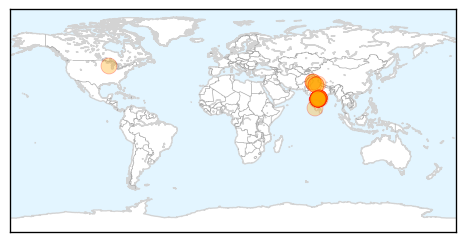
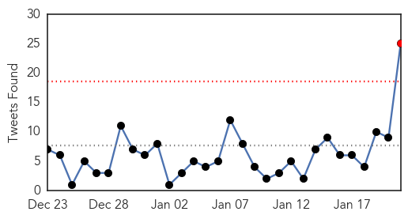

Swine Flu
30-Day Web Trend
5 alerts, 3 warnings

30-Day Twitter Trend
0 alerts, 0 warnings

Article Locations
Article Confidences

Top Articles:
- 1.000
- Spurt in swine flu cases sets alarm bells ringing
- 1.000
- Swine flu in India: Hyderabad suspends drunk driving test over swine flu scare
- 0.999
- Swine Flu Alert puts Telangana Administration on High Alert
- 0.999
- With 173 cases this year, Telangana in grip of swine flu
- 0.999
- H1N1 kills 11 in Hyderabad in 30 days, KCR puts medics on alert
- 0.999
- Andhra Pradesh and Telangana worst hit by the swine flu virus
- 0.998
- Five more persons succumb to swine flu in Hyderabad
- 0.998
- Gandhi Hospital not well equipped to handle swine flu
- 0.998
- Telangana seeks Delhi aid to fight swine flu
- 0.998
- Indiablooms - First Portal on Digital News Management
- 0.997
- Swine flu scare sweeps Telangana
- 0.997
- 1 person dies of swine flu in Jind, 2 test positive in Sirsa
- 0.995
- Swine flu alert in district after first death in Amritsar
- 0.990
- Flu vaccine notworking well; only 23 percent effective
- 0.987
- Swine flu: Centre to send three-member team to Telangana
- 0.983
- Swine Flu Kills 3 More, Infects 50 in a Day!
- 0.968
- Telangana govt presses the panic button
- 0.966
- Telangana Chief Minister Briefs PM Modi Over Swine Flu Cases in State
- 0.964
- Bandaru Puts Onus on TS Govt for Failing to Act on Swine Flu Deaths
- 0.948
- Telangana seeks Centre's help as swine flu cases mount
- 0.943
- Swine Flu: Declare Health Emergency in Telangana, says Congress
- 0.942
- Centre sends medicines to Telangana as swine flu cases mount
- 0.939
- Centre sends medicines to Telangana as swine flu cases mount
- 0.938
- Telangana swine flu cases mount, KCR briefs PM
- 0.927
- Telangana swine flu cases mount, KCR briefs PM
- 0.926
- Man Dies of Swine Flu in Chennai; 23 H1N1 Positive Cases Reported this Year in Tamil Nadu
- 0.916
- Telangana worst hit, KCR seeks Narendra Modi’s help
- 0.908
- Hyderabad in grip of swine flu, KCR declares war on virus
- 0.894
- ‘No need to panic’
- 0.874
- Swine flu: 11 die in Telangana; state seeks Centre's help
- 0.871
- Telangana declares all out war on swine flu
- 0.833
- Central government sends health team to Telangana
- 0.812
- Telangana goes all out to tackle swine flu
- 0.776
- Telangana seeks Centre's help to contain swine flu
- 0.598
- Senior delegation to take stock of rising swine flu cases in Telangana
- 0.586
- After Panic Call to PM Modi, Centre Sends Two Special Teams to Hyderabad to Tackle Swine Flu
- 0.580
- Expert panel to review swine flu situation in Hyderabad
Top Tweets:
-
No tweets found for Jan 21, 2015
Ebola
30-Day Web Trend
1 alerts, 0 warnings

30-Day Twitter Trend
1 alerts, 0 warnings

Article Locations

Article Confidences

Top Articles:
- 1.000
- Ambassador Samantha Power Updates African Diaspora On Ebola Crisis Response at Tadias Magazine
- 1.000
- South Africa helps to beat Ebola
- 1.000
- Australians With African Descent Discriminated Over Ebola Outbreak
- 1.000
- Ebola virus death toll exceeds 8,600: WHO
- 0.999
- Jodhpur man who died at AIIMS tests negative for ebola
- 0.999
- Is this the beginning of the end for the Ebola outbreak?
- 0.999
- 'No room for complacency' UN says, urging vigilance in Ebola fight as West Africa marks progress
- 0.999
- Military tactics defeat Ebola
- 0.999
- Jodhpur man did not die of Ebola in Delhi: Health ministry
- 0.999
- UN reports significant drop in Ebola cases
- 0.999
- Liberia cremates 2,800 Ebola bodies
- 0.999
- UN: African Countries 'Vital' in Fight Against Ebola
- 0.999
- WCMC-Q expert allays Ebola fears
- 0.999
- 'No room for complacency’ UN says, urging vigilance in Ebola fight as West Africa marks progress
- 0.998
- Man's death sparks Ebola fear, tests negative
- 0.998
- Politico SL News UN Must Investigate West Africa Ebola Outbreak
- 0.998
- Ebola cases fall sharply in Sierra Leone
- 0.998
- Study shows how Ebola becomes lethal as it spreads
- 0.998
- U.S.-built Ebola treatment centers in Liberia are nearly empty
- 0.998
- Hospital worker from Jodhpur dies at AIIMS, doctors suspect dengue
- 0.998
- Schools reopen as west Africa turns page on Ebola epidemic
- 0.998
- Number of new Ebola cases declines: UNMEER head
- 0.998
- Phe Ebola Labs in Sierra Leone Making a Difference
- 0.997
- Ebola mutations could render some experimental drugs ineffective, Fort Detrick study finds
- 0.997
- Sierra Leone to reopen schools in March as Ebola infections slow
- 0.997
- Sierra Leone to reopen schools in March as Ebola infections slow
- 0.996
- Signs of hope in battle against Ebola?
- 0.996
- Ebola scientist warns business elite
- 0.996
- Press Release Distribution
- 0.995
- Doctors Without Borders Opens Clinic for Pregnant Women With Ebola in Sierra Leone
- 0.995
- Oklahoma infectious disease unit ready to respond
- 0.994
- Ebola tests at East Surrey Hospital for Africa aid worker
- 0.994
- Russia allocates $8 mln as its contribution to global anti-Ebola efforts
- 0.993
- Statement on the 4th meeting of the IHR Emergency Committee regarding the 2014 Ebola outbreak in West Africa
- 0.993
- South Africa to help fight Ebola in Sierra Leone
- 0.993
- Ebola Virus Mutating Continuously; May make Drugs Less Effective
- 0.993
- Guinea: Three priests beaten and held hostage for 'spreading Ebola'
- 0.993
- UK Nurse Pauline Cafferkey's Condition Improves After Being Critically Ill With Ebola
- 0.993
- Jane Goodall: We Need an Ebola Vaccine for the World's Chimpanzees and Gorillas
- 0.992
- GEESKA AFRIKA ONLINE The Horn of Africa Intelligence News Group Ethiopia: Anbessaw Haile Died of of cerebral malaria not Ebola
- 0.991
- New Ebola treatments could be obsolete before they're even available, say scientists - Panorama
- 0.991
- [PHOTOS] The Hidden Heroes of Ebola
- 0.990
- Davos: UN launches $1 billion appeal for global Ebola response
- 0.990
- Edinburgh’s new Ebola lab tests 8 samples
- 0.989
- UN Says Despite Progress, Fight Against Ebola is Far From Won
- 0.989
- Scotland's first Ebola lab screens eight possible cases since being established in December
- 0.989
- Passenger hospitalized in New Jersey is Ebola-free, released
- 0.985
- Ebola outbreak: UN chief calls for final $1 billion
- 0.985
- Press Note Viral Hemorrhagic Fever cases reported from a Private Hospital
- 0.985
- Possible case of Ebola in Quebec, deemed low-risk
Showing top 50 articles...
Top Tweets:
- 0.999
- Ebola Virus Disease is a deadly illness caused by the Ebola Virus a virus found in several African countries. EBOLAFACT
- 0.984
- RT: Don't forget."@EbolaAlert: Over 17000 cases of Ebola have been reported with over 6000 deaths. EBOLAFACT” Ebola
- 0.946
- Over 17000 cases of Ebola have been reported with over 6000 deaths. EBOLAFACT
- 0.929
- What difficulties do Ebola fighters in Sierra leone Liberia and Guinea face that makes winning the Ebola fight difficult? EbolaChat
- 0.815
- .@ebola_in_SL you can join us for this evening's EbolaChat by 5pm- 'Challenges Facing Ebola Response in Sierra Leone Liberia & Guinea'
- 0.792
- Join the bandwagon and SMS STOP EBOLA to 7979 to Sponsor an Aid Worker to Fight Ebola Africaagainstebola
- 0.779
- RT: Ebola: primary emphasis must be on ‘getting to o’ Ebola casesby stopping transmission in 3 most affected countries. http://t…
- 0.758
- What are the current challenges to Ebola response EbolaCHAT
- 0.731
- Vos dons peuvent sauver des vies ! Soutenez l'initiative en envoyant STOP EBOLA au 7979 ! AfricaAgainstEbola gabon
- 0.704
- RT: In West Africa our troops our scientists our doctors nurses and healthcare workers are rolling back Ebola – saving count…
- 0.698
- At this point Ebola unlikely but not impossible. H7N9 MERS: both similar.
- 0.684
- RT: Fear! "@EbolaAlert: What are the current challenges to Ebola response EbolaCHAT"
- 0.677
- EbolaCHAT starts now! We would be talking about the challenges to Ebola Response in Sierra Leone Guinea and Liberia.
- 0.662
- MT: "In W. Africa our troops our scientists our drs our nurses & healthcare workers are rolling back Ebola " @BarackObama
- 0.604
- RT: Kebeh is a midwife at a Community Health Centre in Liberia which we're supporting with medical supplies. Ebola http:…
- 0.599
- The 2014 Ebola outbreak which started in West Africa is the largest in history. EBOLAFACT
- 0.587
- The Western Africa Ebola Virus Disease Epidemic Exhibits Both Global Exponential and Local Polynomial Growth Rates http://t.co/TKhtIyHyC4
- 0.579
- Just seven Ebola cases yesterday in Sierra Leone http://t.co/IXtIjq3DZu
- 0.574
- Ebola Virus is believed to reside in animal hosts especially fruit bats. EBOLAFACT
- 0.561
- For affected countries it is recommended that they build effective health systems with the momentum gained from fighting Ebola Ebolachat
- 0.558
- A long-awaited Ebola vaccine trial is to start soon in Liberia which had 21 new cases in the past 21 days. Hard to see trial succeeding.
- 0.530
- Exactly. Look how much has been/is being done about Ebola when ppl got motivated; vs. MERS.
- 0.518
- Poor Transportation and Communication Networks of affected countries have made the Ebola fight a tedious one EbolaChat
- 0.514
- [FOX] As Ebola vaccine trials near raising awareness in Sierra Leone is next task http://t.co/Z9iJn0jBn0 EBOLANEWS
- 0.507
- RT: The President on Americans who have helped stop spread of Ebola: "We couldn’t be prouder of them"